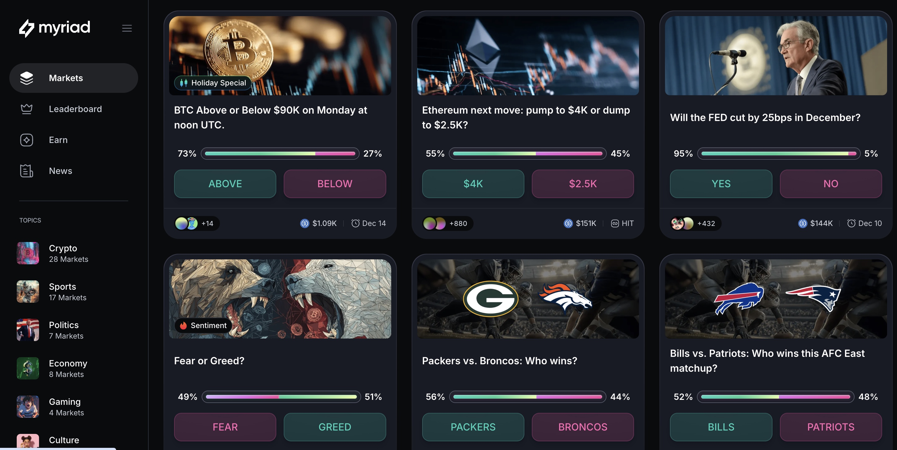

What are prediction markets?
Prediction markets (PMs), also known as information markets, idea futures, event derivatives, or virtual markets, are exchange-traded markets created for the purpose of trading the outcome of events. The market prices can indicate what the crowd thinks the probability of the event is. For example, an event with a 70% chance of happening would trade around 70 cents on the dollar.
How do they work?
In a prediction market, participants buy and sell contracts based on the outcomes of future events. Each contract pays a fixed amount if a specific event occurs and nothing if it does not. The price of the contract reflects the collective belief about the likelihood of the event happening. For example, if a contract for a candidate to win an election is trading at $0.60, it suggests that the market believes there is a 60% chance of that candidate winning.
What is the future of prediction markets?
The future of prediction markets looks promising as they continue to evolve with advancements in technology and data analytics. They have the potential to be integrated into various sectors, including finance, politics, and public health, providing valuable insights and improving decision-making processes. Additionally, the rise of decentralized finance (DeFi) and blockchain technology could lead to more transparent and accessible prediction markets, allowing a broader range of participants to engage in forecasting events.
What are the Big Three and where can you trade them?
- Myriad Markets
- Not yet in the US
- Tradable in Europe
- Tradable in Asia
- Polymarket
- Tradable in the US
- Tradable in Europe
- Kalshi
- Tradable in the US
- Not yet in Europe
- Focus on expansion
More resources